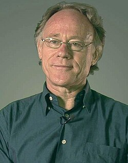

Graham Hancock
British author, born 1950

A former journalist whose books argue that an advanced civilization was lost at the end of the last Ice Age. Archaeologists widely reject his theories as pseudoarchaeology. 1,2
Open in the interactive Watcher
Related
- Fingerprints of the Gods Fingerprints of the Gods, 1995
- Pyramids of Giza and the Sphinx Giza
- Tiwanaku and Puma Punku Tiwanaku
- Göbekli Tepe
Sources
- Graham Hancock Wikipedia
- Fingerprints of the Gods Wikipedia